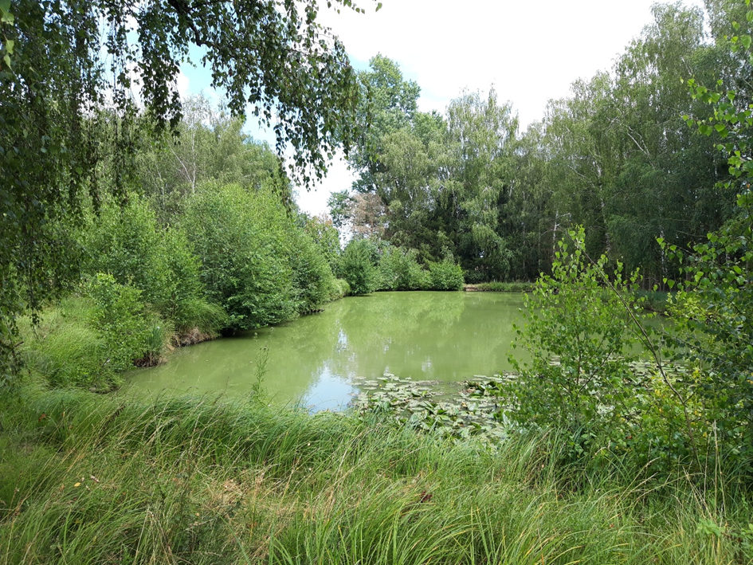
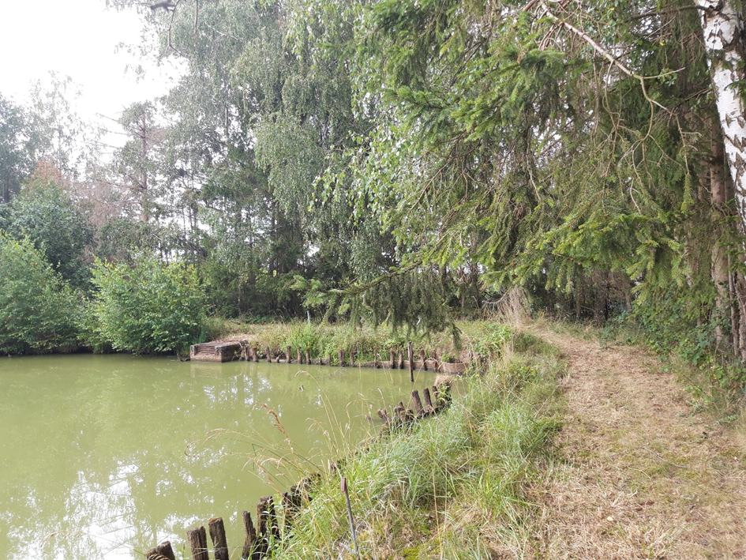
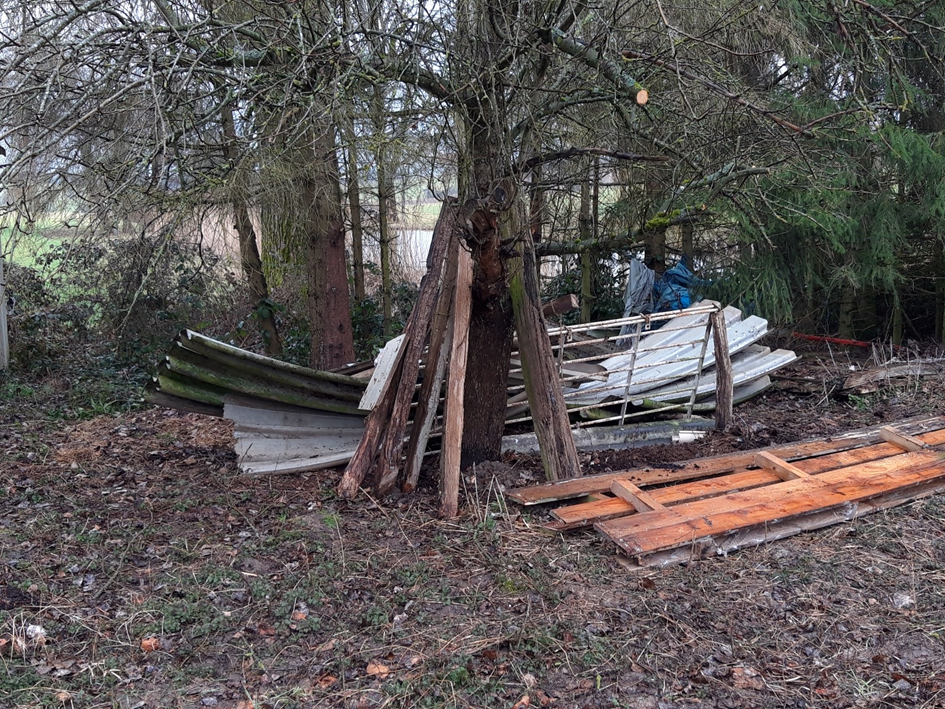
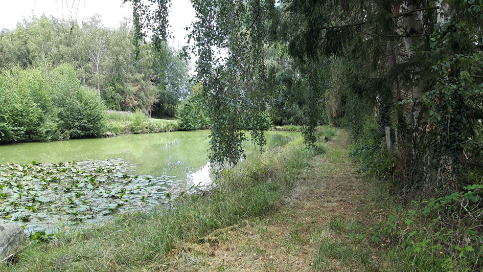
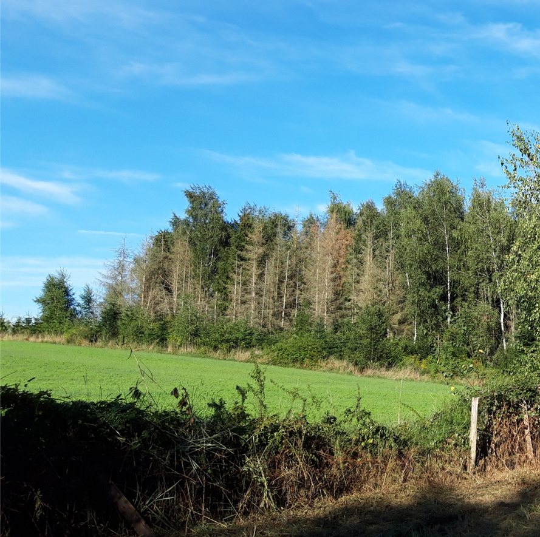
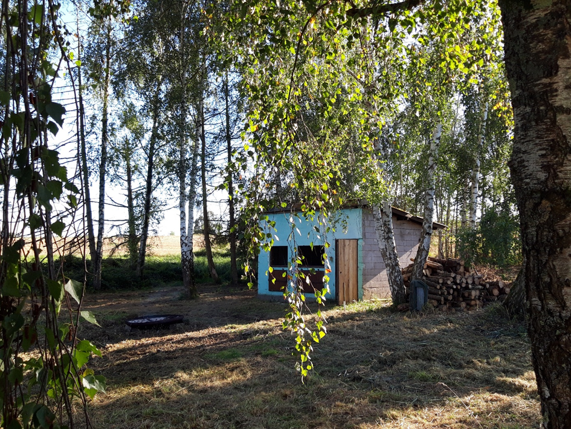
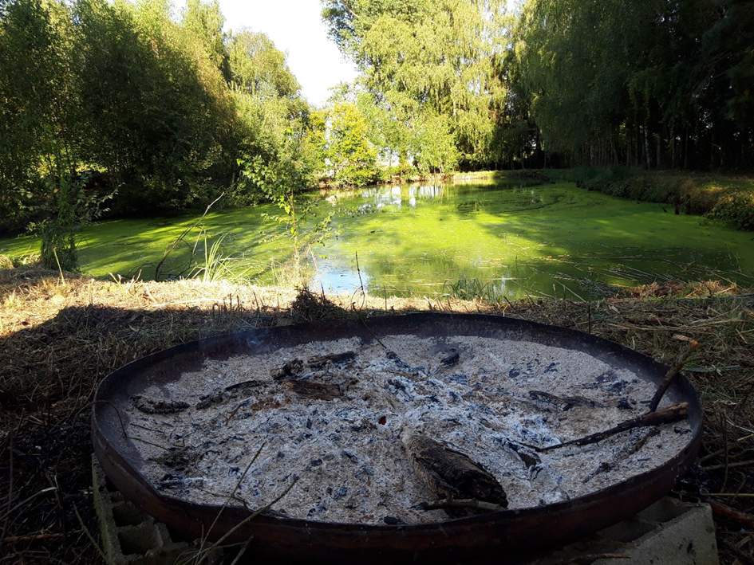

Avant
En 2021, l'acquisition de l'étang Vib par l'entreprise a marqué le début d'un processus de réhabilitation nécessaire face à un état préoccupant. À cette époque, l'étang souffrait de plusieurs problèmes : les berges en mauvais état rendaient l'accès difficile et nuisaient à la biodiversité locale. L'eau trouble, résultat d'un manque d'entretien prolongé, témoignait de l'accumulation de sédiments et de la dégradation de l'écosystème.
De plus, l'étang était entouré d'arbres, mais ceux-ci étaient attaqués par des scolytes, ce qui compromettait leur santé et, par conséquent, l'équilibre de l'écosystème environnant. La présence de déchets et de ferraille stockés sur le site depuis de nombreuses années ajoutait une couche supplémentaire de pollution, rendant la situation encore plus complexe.

La restauration de cet étang a donc constitué une belle opportunité pour redonner vie à cet espace naturel.
La réhabilitation de l'étang d'Vib , voici un aperçu des étapes :
En redessinant les contours de l’étang de manière réfléchie, on peut non seulement améliorer son esthétique, mais aussi renforcer sa fonctionnalité écologique et sa valeur pour la biodiversité.
Remise en état de la digue : celle-ci est cruciale pour assurer une gestion efficace de l'eau et prévenir les risques d'inondation, tout en préservant l'intégrité de l'étang.

Dépollution des abords : En nettoyant les abords de l'étang, on a éliminé les polluants et les déchets qui pouvaient nuire à la faune et à la flore locales.
La présence de vieux meubles et de ferraille stockés sur un site pendant de nombreuses années avec des conséquences néfastes sur l'environnement. Ce type de pollution humaine peut entraîner la dégradation du sol et de l'eau, ainsi que nuire à la biodiversité locale. Les matériaux en décomposition peuvent libérer des substances toxiques, et les objets en métal peuvent rouiller, contaminant ainsi le sol environnant.

Un étang avec des roseaux et des nénuphars est non seulement un lieu magnifique à contempler, mais il joue également un rôle crucial dans l'écosystème. Les roseaux, en stabilisant les berges, aident à prévenir l'érosion, tandis que leur capacité à filtrer les polluants améliore la qualité de l'eau, ce qui est essentiel pour la vie aquatique. Les nénuphars, avec leur beauté délicate, créent un habitat idéal pour de nombreux insectes et poissons, tout en apportant de l'ombre qui aide à maintenir une température équilibrée dans l'eau. C'est un véritable écosystème en miniature qui mérite d'être préservé et apprécié !

La santé des arbres est cruciale pour maintenir l'équilibre de l'écosystème. Les scolytes, en attaquant les arbres, non seulement compromettent leur survie, mais perturbent également les interactions entre les différentes espèces qui dépendent de ces arbres pour leur habitat et leur nourriture.
De plus, la dégradation des arbres peut entraîner une érosion accrue du sol, ce qui peut affecter la qualité de l'eau de l'étang en augmentant la sédimentation et en réduisant la clarté de l'eau. Cela peut également nuire aux organismes aquatiques qui dépendent d'un environnement sain.
Pour faire face à cette situation, il est essentiel d'agir rapidement.

La réfection de cet abri de pêche aura un double avantage : créer un lieu agréable pour les nouveaux propriétaires tout en préservant l'environnement. Cet espace convivial pourra également encourager les interactions entre les nouveaux propriétaires et les autres membres de la communauté, renforçant ainsi le lien social autour de la pêche et de la nature. En plus de sensibiliser les utilisateurs à l'importance de respecter l'écosystème, vous contribuerez ainsi à une meilleure gestion des ressources naturelles.

Après
En s'attaquant aux problèmes structurels et en dépolluant, l'entreprise a non seulement amélioré la qualité de l'eau, mais a également permis à la faune et à la flore de retrouver leur habitat naturel. C'est une belle initiative qui contribue à la biodiversité et à la santé des écosystèmes.
Ce projet de réhabilitation a également inspiré d'autres initiatives similaires, soulignant ainsi l'importance cruciale de prendre soin de nos écosystèmes aquatiques.
C'est un lieu idéal pour se ressourcer et observer la nature !
